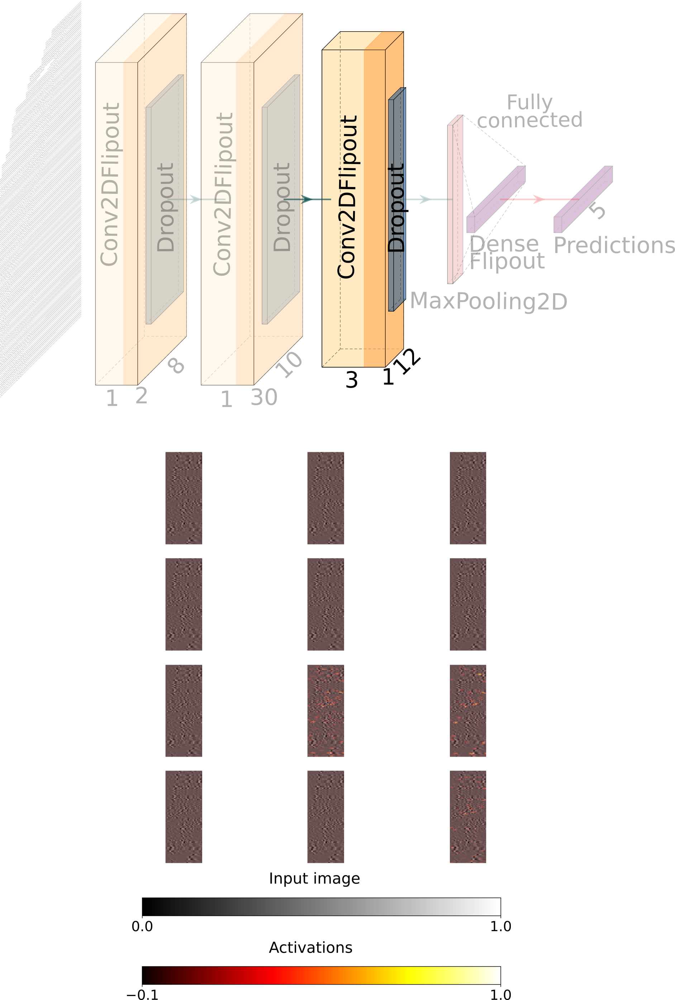

Estimating Seismic Moment Tensors based on Bayesian Machine Learning
Andreas Steinberg¹, Hannes Vasyura-Bathke²³, Peter Gaebler¹, Matthias Ohrnberger² and Lars Ceranna¹
1 Bundesanstalt für Geowissenschaften und Rohstoffe (BGR), B4.3 Erdbebendienst des Bundes, Kernwaffenteststopp
2 University of Potsdam, Institute for Earth and Environmental Sciences
3 King Abdullah University of Science and Technology


Motivation
Full seismic moment tensors
Fast estimation of seismic moment tensors necessary for:
- Earthquake early warning systems, i.e. shakemaps
- Physics based fore- and aftershock analysis
- Monitoring of geothermal stimulations

Machine Learning
- input: images and assoicated labels
- learning features of by layered convolutions with kernels
- kernel size and number of filters vary from layer to layer
- output: model able to predict label given unseen data
Machine Learning
- Deep convolutional ML learns the features of images as weights of Neural Networks
- proven fast for seismic signal analysis (e.g. Kriegerowski et al., 2019)
- recent advances allow for distributions of weights
Training Input
- training on synthetic waveforms from a volume of potential source locations
- advantage: controll over source and targets
- using pre-calculated Green's function stores (Pyrocko and QSEIS)
- CNN optimised for images
- Amplitudes vary for different sources-distances →no direct use of the waveform arrays for training

- filter waveforms (bandpass 0.8-5.4 Hz)
- cut 1s before first phase onset
- cut 4s after first phase onset
Normalized input for a single earthquake source

Labels
Using the Lune paramterziation of the MT
- only 5 unique paramters (κ, σ, h, w, v)
- cartesian coordinate system
- v=0 and w=0 -> isotropic source
- no scaling with ρ because of normalized input

BNN
Network design
- All models are wrong, but some are useful
- Train our networks to say: "I dont know"
- robust estimations necessary for operational hazard frameworks
Network design - keep it simple
- loss function: neg. log-likeliehood
- optimizer: Adam, RELu activations
- Flipout layer (Wen, 2018), tfp
Blackbox? Example activations

Blackbox? Example activations

Blackbox? Example activations

Blackbox? Example activations
Blackbox? Example activations
Blackbox? Example activations

Blackbox? Example activations

Variational inference (Bayesian) Machine Learning approach
Test and validation with unseen data of the the 2019 Ridgecrest sequence
Comparison of predictions and 8 SCEDC catalog moment tensors
Omega angle distance measure
\[\begin{aligned} d = \frac{1}{2}\Bigg[1-\frac{U_{1}\cdot U_{2}}{||U_{1}||||U_{2}||}\Bigg] = \frac{1}{2}\Bigg[1-\frac{\sum U_{1_{ij}}\cdot U_{2_{ij}}}{(\sum U^2_{1_{ij}})^{\frac{1}{2}} (U^2_{2_{ij}})^{\frac{1}{2}}}\Bigg] \end{aligned} \]
after Tape and Tape, 2012
Comparison of predictions and 196 SCEDC catalog focal mechanisms (Mw 2.7 to 4.5)


Conclusions
- ML can be applied to determine full MTs
- sucessfully reproduce indepently determined MTs for subset of Ridgecrest earthquakes
Conclusions
- ML can be applied to determine full MTs
- sucessfully reproduce indepently determined MTs for subset of Ridgecrest earthquakes
General takeaway
- (Bayesian) Variational Machine Learning can be useful in geophysics
- ML != black box (if you do not make it one)
General takeaway
- (Bayesian) Variational ML can be useful in geophysics
- ML != black box (if you do not make it one)
Appendix
For each potential source location in the grid:
- steps: 0.1π for κ, 0.2 for σ, h and w and 0.02 for v
- 171.600 waveform datasets
- 196 gridpoints for the test dataset